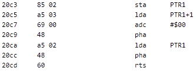

Inline Data
Consider the code at address $206B. It's a JSR followed by some
ASCII text, then a $00 byte, and then what might be code.
...

Double-click on the JSR opcode
to jump to $20AB to see the function. It pulls the
call address off the stack, and uses it as a pointer. When it encounters
a zero byte, it breaks out of the loop, pushes the adjusted pointer
value back onto the stack, and returns.
This is an example of "inline data", where a function uses the return
address to get a pointer to data. The return address is adjusted to
point past the inline data before returning (technically, it points at
the very last byte of the inline data, because
RTS jumps to address + 1).
To format the data, we first need to tell SourceGen that there's data in line with the code. Select the line at address $206E, then shift-click the line at address $2077. Use Actions > Tag Bytes As Inline Data (Ctrl+HCtrl+I).
The data turns to single-byte values, and we now see the code continuing at address $2078. We can format the data as a string by using Actions > Edit Operand, setting the Character Encoding to Low or High ASCII, and selecting null-terminated strings.
That's pretty straightforward, but this could quickly become tedious if there were a lot of these. SourceGen allows you to define scripts to automate common formatting tasks. This is covered in the "Extension Scripts" tutorial.